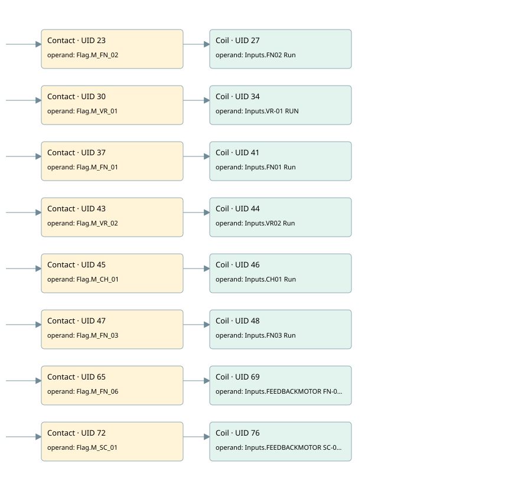

motors simulated
simulation · 검색 색인 순서 6 · 원본 내부 NID 추정 3
백업 PLF 원본의 2997665 바이트 위치에서 복원한 XML. 검색 문서 1084의 객체 키 161022007528000000000000와 연결했다. 이름 해석 16/16개. 남은 RefId는 상수 또는 미해석 참조다.
연결 구조 다시 그리기
원본 Part/PCon/Wire를 이용한 연결도다. TIA 화면의 래더 배치 또는 실행 결과를 재현한 그림은 아니다. 핀 연결은 아래 표와 원본 XML을 기준으로 읽는다. 노드 위에 마우스를 두면 피연산자 이름을 볼 수 있다.

접점·코일·블록과 피연산자
| Part UID | Gate | Negated 핀 | 연결 피연산자 |
|---|---|---|---|
| 23 | Contact | operand = Flag.M_FN_02 | |
| 27 | Coil | operand = Inputs.FN02 Run | |
| 30 | Contact | operand = Flag.M_VR_01 | |
| 34 | Coil | operand = Inputs.VR-01 RUN | |
| 37 | Contact | operand = Flag.M_FN_01 | |
| 41 | Coil | operand = Inputs.FN01 Run | |
| 43 | Contact | operand = Flag.M_VR_02 | |
| 44 | Coil | operand = Inputs.VR02 Run | |
| 45 | Contact | operand = Flag.M_CH_01 | |
| 46 | Coil | operand = Inputs.CH01 Run | |
| 47 | Contact | operand = Flag.M_FN_03 | |
| 48 | Coil | operand = Inputs.FN03 Run | |
| 65 | Contact | operand = Flag.M_FN_06 | |
| 69 | Coil | operand = Inputs.FEEDBACKMOTOR FN-06 | |
| 72 | Contact | operand = Flag.M_SC_01 | |
| 76 | Coil | operand = Inputs.FEEDBACKMOTOR SC-01 |
접점 경로를 펼친 조건식
Contact·O/A·비교기의 원본 연결을 읽기 쉽게 펼친 보조 해석이다. POWER는 전원 레일 시작을 뜻한다. 호출 블록·에지·타이머의 내부 동작과 다중 쓰기 순서는 이 표로 실행 검증하지 않았다. 미해석 핀과 RefId는 원문 연결표에서 확인한다.
| UID | 동작 | 대상 | 원본 접점 경로 | 내용 |
|---|---|---|---|---|
| 27 | Coil | Inputs.FN02 Run | Flag.M_FN_02 | 조건에 따른 Coil 기록 |
| 34 | Coil | Inputs.VR-01 RUN | Flag.M_VR_01 | 조건에 따른 Coil 기록 |
| 41 | Coil | Inputs.FN01 Run | Flag.M_FN_01 | 조건에 따른 Coil 기록 |
| 44 | Coil | Inputs.VR02 Run | Flag.M_VR_02 | 조건에 따른 Coil 기록 |
| 46 | Coil | Inputs.CH01 Run | Flag.M_CH_01 | 조건에 따른 Coil 기록 |
| 48 | Coil | Inputs.FN03 Run | Flag.M_FN_03 | 조건에 따른 Coil 기록 |
| 69 | Coil | Inputs.FEEDBACKMOTOR FN-06 | Flag.M_FN_06 | 조건에 따른 Coil 기록 |
| 76 | Coil | Inputs.FEEDBACKMOTOR SC-01 | Flag.M_SC_01 | 조건에 따른 Coil 기록 |
원본 배선 연결
| Wire UID | 동일 Wire 연결 끝점 |
|---|---|
| 21 | Powerrail {} ↔ Part 23.in ↔ Part 30.in ↔ Part 37.in ↔ Part 43.in ↔ Part 45.in ↔ Part 47.in ↔ Part 65.in ↔ Part 72.in |
| 22 | ORef 24 (Flag.M_FN_02) ↔ Part 23.operand |
| 25 | Part 23.out ↔ Part 27.in |
| 26 | ORef 28 (Inputs.FN02 Run) ↔ Part 27.operand |
| 29 | ORef 31 (Flag.M_VR_01) ↔ Part 30.operand |
| 32 | Part 30.out ↔ Part 34.in |
| 33 | ORef 35 (Inputs.VR-01 RUN) ↔ Part 34.operand |
| 36 | ORef 38 (Flag.M_FN_01) ↔ Part 37.operand |
| 39 | Part 37.out ↔ Part 41.in |
| 40 | ORef 42 (Inputs.FN01 Run) ↔ Part 41.operand |
| 56 | ORef 49 (Flag.M_VR_02) ↔ Part 43.operand |
| 57 | Part 43.out ↔ Part 44.in |
| 58 | ORef 50 (Inputs.VR02 Run) ↔ Part 44.operand |
| 59 | ORef 51 (Flag.M_CH_01) ↔ Part 45.operand |
| 60 | Part 45.out ↔ Part 46.in |
| 61 | ORef 52 (Inputs.CH01 Run) ↔ Part 46.operand |
| 62 | ORef 53 (Flag.M_FN_03) ↔ Part 47.operand |
| 63 | Part 47.out ↔ Part 48.in |
| 64 | ORef 54 (Inputs.FN03 Run) ↔ Part 48.operand |
| 55 | ORef 66 (Flag.M_FN_06) ↔ Part 65.operand |
| 67 | Part 65.out ↔ Part 69.in |
| 68 | ORef 70 (Inputs.FEEDBACKMOTOR FN-06) ↔ Part 69.operand |
| 71 | ORef 73 (Flag.M_SC_01) ↔ Part 72.operand |
| 74 | Part 72.out ↔ Part 76.in |
| 75 | ORef 77 (Inputs.FEEDBACKMOTOR SC-01) ↔ Part 76.operand |
식별자 해석 근거 16개
| ORef UID | RefId | 이름 | IdentXmlPart 파일 | 해석 방법 |
|---|---|---|---|---|
| 24 | 109 | Flag.M_FN_02 | 0635-IdentXmlPart.xml | UID/RID + search-text + NID agreement |
| 28 | 92 | Inputs.FN02 Run | 0635-IdentXmlPart.xml | UID/RID + search-text + NID agreement |
| 31 | 110 | Flag.M_VR_01 | 0635-IdentXmlPart.xml | UID/RID + search-text + NID agreement |
| 35 | 94 | Inputs.VR-01 RUN | 0635-IdentXmlPart.xml | UID/RID + search-text + NID agreement |
| 38 | 111 | Flag.M_FN_01 | 0635-IdentXmlPart.xml | UID/RID + search-text + NID agreement |
| 42 | 96 | Inputs.FN01 Run | 0635-IdentXmlPart.xml | UID/RID + search-text + NID agreement |
| 49 | 116 | Flag.M_VR_02 | 0635-IdentXmlPart.xml | UID/RID + search-text + NID agreement |
| 50 | 98 | Inputs.VR02 Run | 0635-IdentXmlPart.xml | UID/RID + search-text + NID agreement |
| 51 | 117 | Flag.M_CH_01 | 0635-IdentXmlPart.xml | UID/RID + search-text + NID agreement |
| 52 | 100 | Inputs.CH01 Run | 0635-IdentXmlPart.xml | UID/RID + search-text + NID agreement |
| 53 | 114 | Flag.M_FN_03 | 0635-IdentXmlPart.xml | UID/RID + search-text + NID agreement |
| 54 | 102 | Inputs.FN03 Run | 0635-IdentXmlPart.xml | UID/RID + search-text + NID agreement |
| 66 | 115 | Flag.M_FN_06 | 0635-IdentXmlPart.xml | UID/RID + search-text + NID agreement |
| 70 | 104 | Inputs.FEEDBACKMOTOR FN-06 | 0635-IdentXmlPart.xml | UID/RID + search-text + NID agreement |
| 73 | 113 | Flag.M_SC_01 | 0635-IdentXmlPart.xml | UID/RID + search-text + NID agreement |
| 77 | 106 | Inputs.FEEDBACKMOTOR SC-01 | 0635-IdentXmlPart.xml | UID/RID + search-text + NID agreement |
검색 코드 보조 자료
참조 명칭을 찾기 위한 자료이며 실행 순서나 AND/OR 관계는 위 연결표로 확인한다.
"flag".m_fn_02 "inputs"."fn02 run" "flag".m_vr_01 "inputs"."vr-01 run" "flag".m_fn_01 "inputs"."fn01 run" "flag".m_vr_02 "inputs"."vr02 run" "flag".m_ch_01 "inputs"."ch01 run" "flag".m_fn_03 "inputs"."fn03 run" "flag".m_fn_06 "inputs"."feedbackmotor fn-06" "flag".m_sc_01 "inputs"."feedbackmotor sc-01"